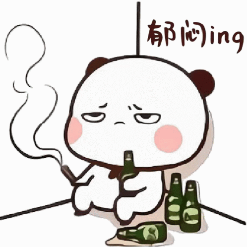
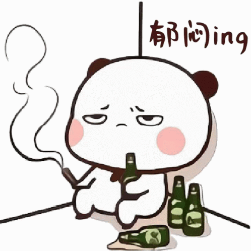

Sentuh LOVEnya!
 



Happy mensive, pacarku yang ngeselin tapi ngangenin! hehe i'm so happy today ^-^ here's to many more days of sharing our stories. gak kerasa ternyata udah ditanggal aku dan kamu jadi kita
Siapa sangka yang awalnya saling godain doang, bisa jadi saling sayang sampe sekarang? tapi aku ngga nyesel bisa sampe di posisi skrg to be your boyfriend
Thanks ya, udah tahan sama aku yang kadang mikirnya childish, suka nyusahin kamu, dan sering banget caper padahal ujung-ujungnya bikin kamu kesel wkwk.
Maaf juga ya karena kamu harus sabar sama mood aku yang bisa berubah secepet sinyal ilang pas hujan—kadang marah gak jelas, tiba-tiba ngambek, OVT gak penting, terus malah bikin kamu pusing sendiri.
Padahal ya, sebenernya aku tuh cuma pengen nyari perhatian kamu aja :(
aAku tau banget kadang aku ngeselin setengah mati sampe kamu pengen nonjok aku (secara virtual ya!), tapi aku juga tau kamu tetep gak bisa bener-bener marah sama aku kan?? IYAAA KAAAN? 😠YEAH âï¸âï¸âï¸âï¸âï¸/âï¸âï¸âï¸âï¸âï¸ five out five stars for my boyfriend!!!
jontol aku punya tebak tebakan, kuping kuping apa yang bisa bikin bahagia?
Jawabannya: "Kuping in sama kamu selamanya walaupun kamu ngeselin." Gemes gak? Gemes doong 😝
Let’s keep growing together, let’s be better, and let’s never forget how lucky we are to have each other.
Aku sayang kamu banyak banyak, meskipun kadang pengen cubit ginjal kamu pelan dikit hehe 💗
Klik untuk Geser!
Happy Mensive!!! Ini hadiah simple yang bisa aku kasih untuk kamu, tapi aku bikin dengan penuh effort tau semoga kamu suka ya. aku sayang kamu dari awal kita jalin hubungan sampai sekarang, rasanya masih sama dan malah perasaan aku makin besar. Terimakasih untuk selalu usaha dalam hubungan kita sayang
I love you more than you know